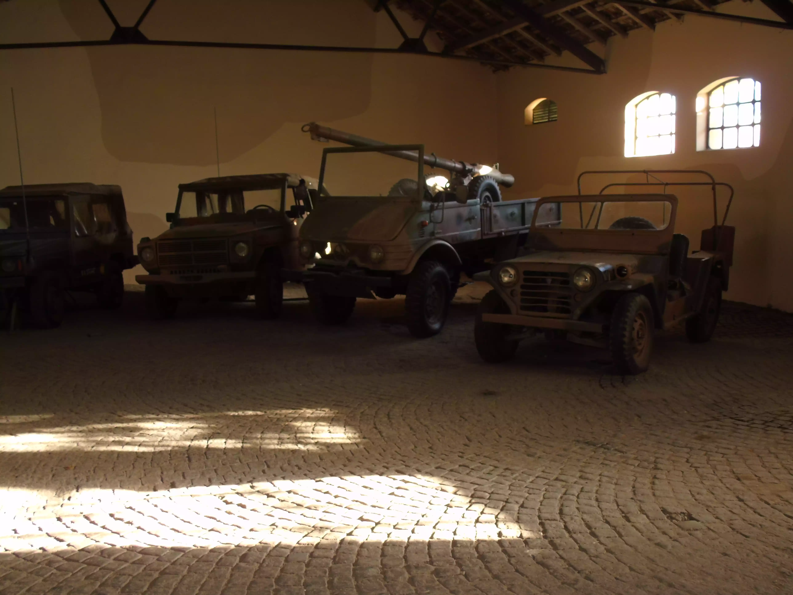

Vehículos de Transporte y Anfibios del Ejército Argentino
El Ejército Argentino, a lo largo de su historia, ha utilizado distintos medios de transporte terrestre
y anfibio con el objetivo de asegurar la movilidad de tropas, equipos y suministros en todo el
territorio nacional y en operaciones en el exterior. Estas capacidades fueron claves tanto en la defensa
nacional como en misiones de paz y apoyo a la comunidad.
Primeras Etapas (siglo XIX – primeras décadas del XX)
Durante el siglo XIX, el transporte militar se realizaba principalmente a través de caballos,
carretas y mulas, fundamentales en las campañas militares de la independencia, las guerras
civiles y la Conquista del Desierto. Recién a comienzos del siglo XX, con la modernización de
las fuerzas armadas, comenzaron a incorporarse vehículos a motor para transporte de personal y
carga, siguiendo la tendencia de los ejércitos europeos.
Modernización y Segunda Guerra Mundial
En las décadas de 1930 y 1940 se introdujeron camiones y jeeps de origen estadounidense y alemán, que
reemplazaron progresivamente los medios de tracción a sangre. El Jeep Willys MB y camiones como el
Chevrolet C-15 fueron de los primeros vehículos de transporte motorizado en gran escala. Estos medios
aportaron flexibilidad y rapidez al Ejército, facilitando el despliegue en terrenos diversos.
Etapa de industrialización nacional (1950–1970)
En la posguerra, la Argentina buscó producir sus propios vehículos militares. En este marco, el Ejército
incorporó camiones fabricados por Industrias Aeronáuticas y Mecánicas del Estado (IAME) y más tarde por
FIAT y Mercedes-Benz Argentina, destinados al transporte logístico.
En este período también se desarrollaron los primeros proyectos de vehículos anfibios. Se incorporaron algunos ejemplares de DUKW estadounidenses –camiones anfibios de la Segunda Guerra Mundial– utilizados en prácticas de cruce de ríos y en operaciones combinadas con la Infantería de Marina.
M113: de origen estadounidense, un transporte blindado de personal anfibio, ampliamente utilizado por el Ejército desde fines de la década de 1960. Puede operar en ríos y lagunas gracias a su sistema de flotación.
TAM VCTP (Vehículo de Combate Transporte de Personal): versión argentina del Tanque Argentino Mediano, producido localmente desde fines de los años 70. Si bien no es anfibio, fue el núcleo del transporte mecanizado moderno.
Unimog 416 y 431: camiones todoterreno de origen alemán, producidos también en Argentina bajo licencia, que cumplieron funciones de transporte de tropas y cargas pesadas, aptos para terrenos difíciles.
En este período también se desarrollaron los primeros proyectos de vehículos anfibios. Se incorporaron algunos ejemplares de DUKW estadounidenses –camiones anfibios de la Segunda Guerra Mundial– utilizados en prácticas de cruce de ríos y en operaciones combinadas con la Infantería de Marina.
Los vehículos blindados y anfibios (década de 1970 en adelante)
La movilidad de tropas se reforzó con la llegada de vehículos blindados de transporte de personal. Entre los más destacados se encuentran:M113: de origen estadounidense, un transporte blindado de personal anfibio, ampliamente utilizado por el Ejército desde fines de la década de 1960. Puede operar en ríos y lagunas gracias a su sistema de flotación.
TAM VCTP (Vehículo de Combate Transporte de Personal): versión argentina del Tanque Argentino Mediano, producido localmente desde fines de los años 70. Si bien no es anfibio, fue el núcleo del transporte mecanizado moderno.
Unimog 416 y 431: camiones todoterreno de origen alemán, producidos también en Argentina bajo licencia, que cumplieron funciones de transporte de tropas y cargas pesadas, aptos para terrenos difíciles.

.webp)
.webp)
Conflicto del Atlántico Sur (1982)
Durante la Guerra de Malvinas, los medios de transporte y anfibios jugaron un papel crucial. El
M113 fue empleado en el teatro de operaciones continental, mientras que en las islas predominó
el uso de camiones y jeeps adaptados al terreno. Los anfibios de gran porte (DUKW y similares)
ya no estaban en servicio, lo que limitó la capacidad logística de cruce en condiciones
marítimas adversas.
Período reciente (1990–actualidad)
En misiones de paz y despliegues internacionales, el Ejército Argentino ha empleado vehículos de
transporte de personal blindados y camiones logísticos modernos, en parte provistos por la ONU o
adquiridos en cooperación internacional.
Entre ellos:
Mowag Grenadier 4x4 (suizo, de transporte blindado ligero).
Camiones Mercedes-Benz Atego y URO VAMTAC (todoterreno de alta movilidad).
Renovación de la flota de M113 modernizados con mejoras en motor, blindaje y sistemas de comunicación.
En cuanto a anfibios, el Ejército mantiene aún unidades de M113 y variantes capaces de operar en agua, complementados con embarcaciones de apoyo para ingenieros y operaciones en ríos.
Importancia actual
Hoy en día, los vehículos de transporte y anfibios constituyen una pieza fundamental en la capacidad operativa del Ejército Argentino. No solo garantizan la movilidad en operaciones militares, sino que también cumplen un rol vital en asistencia humanitaria, evacuaciones, inundaciones y catástrofes naturales, donde el cruce de ríos y terrenos anegados es una tarea frecuente.
Entre ellos:
Mowag Grenadier 4x4 (suizo, de transporte blindado ligero).
Camiones Mercedes-Benz Atego y URO VAMTAC (todoterreno de alta movilidad).
Renovación de la flota de M113 modernizados con mejoras en motor, blindaje y sistemas de comunicación.
En cuanto a anfibios, el Ejército mantiene aún unidades de M113 y variantes capaces de operar en agua, complementados con embarcaciones de apoyo para ingenieros y operaciones en ríos.
Importancia actual
Hoy en día, los vehículos de transporte y anfibios constituyen una pieza fundamental en la capacidad operativa del Ejército Argentino. No solo garantizan la movilidad en operaciones militares, sino que también cumplen un rol vital en asistencia humanitaria, evacuaciones, inundaciones y catástrofes naturales, donde el cruce de ríos y terrenos anegados es una tarea frecuente.